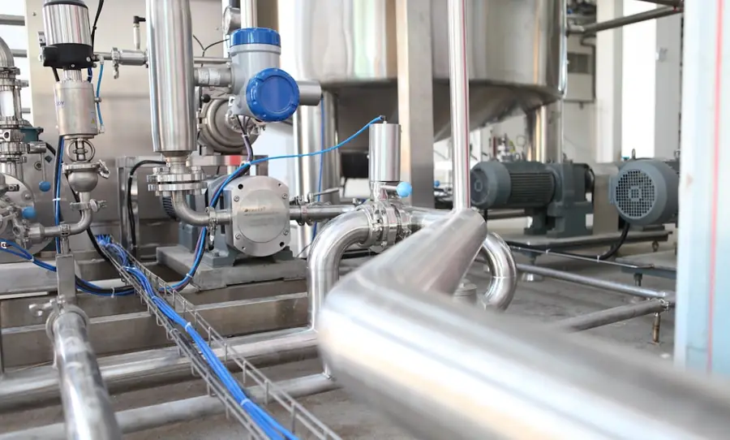
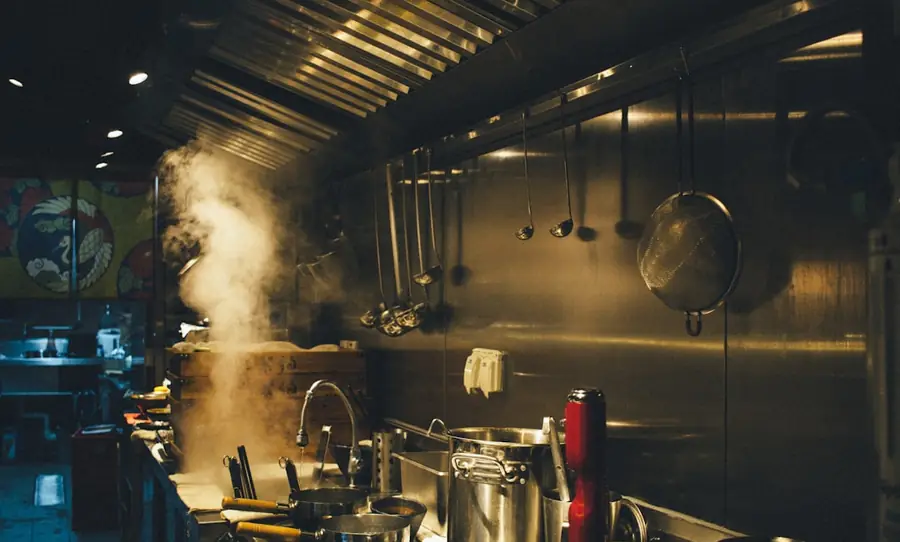
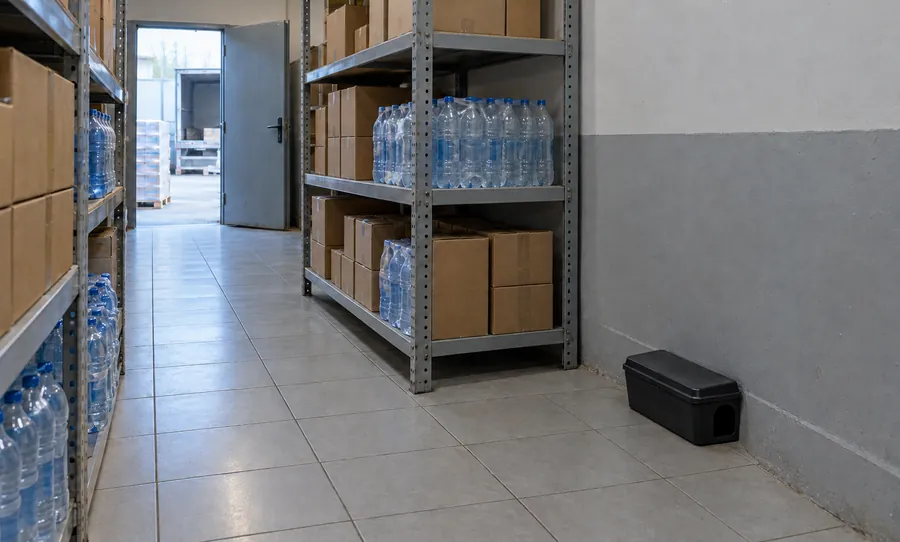
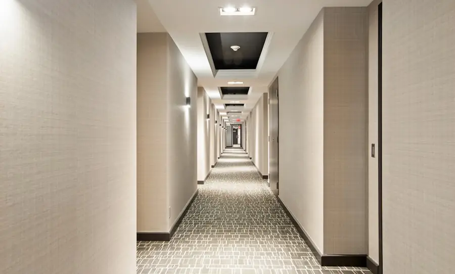
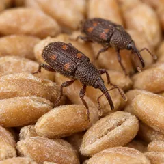
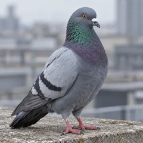

Сеть назначила аудит поставщика. По пест-контролю у нас только акты разовых обработок — ни схемы точек, ни журнала осмотров.
Служба качестваПищевое производство
Берём объект на постоянное обслуживание: обследуем, составляем программу, ставим точки мониторинга и проводим осмотры по графику. Обработки — только по показаниям, запись в журнале и акт — после каждого визита.
Обработки на всех трёх объектах уже проводили. Но без регулярного наблюдения вредители возвращаются, а показать проверяющему можно только разовые акты.
Сеть назначила аудит поставщика. По пест-контролю у нас только акты разовых обработок — ни схемы точек, ни журнала осмотров.
Кухню обрабатывают каждый месяц, а через пару недель тараканы снова у мойки. Хотим понять, откуда они приходят.
На приёмке нашли погрызенную упаковку. Клиент просит подтвердить, что на складе ведётся контроль грызунов.
Узнали свою ситуацию? Начните с обследования: специалист найдёт причину и предложит программу обслуживания для вашего объекта.
Получить расчётДва шага — до договора, два — уже в работе. На каждом понятно, что делаем мы и что получает объект.
Специалист осматривает помещения и территорию, фотографирует следы активности и уязвимые места, смотрит, какие документы по пест-контролю у вас уже есть.

Предлагаем зоны контроля, оборудование, график визитов и средства с госрегистрацией. Называем стоимость и отдельно указываем, что входит в обслуживание, а что согласуется дополнительно.

После подписания договора ставим и нумеруем станции, ловушки и лампы, наносим их на план и заводим журнал. Если есть активный очаг — сначала обрабатываем его.

Осматриваем точки по графику, записываем результаты, корректируем программу и сообщаем, что исправить на объекте.

Регулярный визит — это не опрыскивание по календарю. Специалист проходит цикл интегрированной защиты (IPM): осмотр, санитария, учёт, действие. Препарат — только там, где его требуют данные мониторинга.
Проверяем каждую станцию, ловушку и лампу по схеме, фиксируем находки и следы активности.
Хранение сырья, уборка, отходы, протечки, щели и открытые проёмы. Рекомендации даём с фото; устраняет объект или мы — по отдельному согласованию.
Сводим данные по точкам и зонам: видно, где активность растёт, а где проблема снята.
Обрабатываем только очаг, подбираем средство под вид вредителя и чередуем действующие вещества, чтобы не возникала устойчивость.
Ведём записи по каждому визиту и держим пакет в актуальном виде. Состав согласуем под объект и требования вашей системы качества.
Объекты, зоны контроля, периодичность визитов и ответственные. Основа раздела пест-контроля в плане ХАССП.
План объекта с пронумерованными станциями, ловушками и лампами. Обновляем, когда точки переносим или добавляем.
Дата, точка, находки и принятые меры — по каждому визиту.
Что сделано, каким средством, в какой концентрации и с какими мерами безопасности.
Свидетельства о госрегистрации и инструкции на все средства, которые применяем на объекте.
Динамика по зонам, замечания по санитарии и конструкции, что исправить до следующего визита.
У производства, ресторана и склада разные проверяющие, вредители и режим работы. Программу строим под это с первого выезда.

Мясо, молоко, хлеб, кондитерские изделия. Точки контроля по зонам ХАССП, закрытые станции в цехах, документы к аудиту сети и сертификации.

Тараканы и мухи на кухне, в мойке и на складе. Работаем после закрытия, время возобновления работы согласуем по инструкции к средству.

Торговый зал, подсобки, зона приёмки и хранения. Точки контроля и график осмотров определяем после обследования.

Несколько адресов — один стандарт: общая программа, единый график и сводная отчётность по всем магазинам.

Рампы и зоны приёмки, контроль грызунов снаружи и внутри здания, мониторинг по зонам хранения.

Плановые осмотры номерного фонда, срочный выезд по сообщению гостя, обучение горничных признакам клопов.
Дератизация и дезинсекция в программе — по данным мониторинга. Для каждого вида свои точки контроля и признаки, которые может заметить персонал.

Прячутся в тёплых щелях у оборудования, в коробах и под мойками. Мониторы показывают, где очаг, поэтому обрабатываем точечно, а не всё помещение.

Портят сырьё и упаковку, повреждают проводку, переносят инфекции. Станции закрытые: приманка недоступна людям и продукции.

Летят на запах отходов и брожения. Массовые дрозофилы почти всегда указывают на проблему с уборкой, сливами или хранением.

Заводятся в муке, крупах и сухих кормах. Заражённая партия уходит в брак, а без мониторинга очаг расходится по складу.

Попадают в номера с багажом гостей и вещами персонала. Важно найти очаг до отзывов: проверяем номер и соседние.

Селятся под навесами и над рампами, пачкают помётом продукцию и технику. Подсказываем, какие проёмы закрыть и где нужна защита.
Цену называем после обследования: она зависит от площади, типа объекта, числа точек контроля и частоты визитов. Состав работ и стоимость фиксируем в договоре.

Обследование, схема точек контроля, журнал и инструктаж персонала — чтобы к визиту аудитора система уже работала и в журнале были записи.

Срочный осмотр номера и соседних, обработка очага, повторный контроль, затем плановые осмотры номерного фонда и инструктаж горничных.
Разовая обработка убивает тех, кто попал под препарат, но не убирает причину. При постоянном контроле точки мониторинга показывают, где и когда появилась активность, а специалист находит пути проникновения и говорит, как их закрыть. Препарата нужно меньше, а у объекта появляется история наблюдений.
Периодичность зависит от типа объекта, вредителей и требований вашей системы качества. Мы предлагаем её по итогам обследования и закрепляем в программе и договоре. Если появился активный очаг, визиты на время учащаем.
Визиты по графику, осмотр и обслуживание точек контроля, записи в журнале, акты и отчёты. Как оплачиваются обработки по результатам мониторинга и выезды вне графика, прописываем в договоре. Точную сумму называем после обследования.
Позвоните или напишите в мессенджер. Согласуем внеплановый выезд, найдём причину и при необходимости обработаем очаг. Порядок таких выездов закрепляем в договоре.
Да. Специалист осматривает объект, затем мы присылаем программу и расчёт. Если условия не подойдут, вы ничего не должны.
Договор и программу, схему точек контроля, журнал осмотров, акты выполненных работ, копии СГР и инструкции на средства, отчёт за месяц. Состав пакета уточняем под объект и требования вашей системы качества.
Да. Осмотр точек не мешает процессу. Обработки, если они нужны, планируем на ночь, выходные или санитарный день. Когда можно возобновить работу, зависит от метода и инструкции к средству — сообщаем об этом заранее.
Приманки — только в закрытых станциях, доступа к ним нет ни у людей, ни у продукции. В производственных зонах ставим ловушки без яда. Применяем только зарегистрированные средства и строго по инструкции.
Оставьте контакты — перезвоним, уточним тип и площадь объекта и согласуем день обследования. Расчёт ни к чему не обязывает.